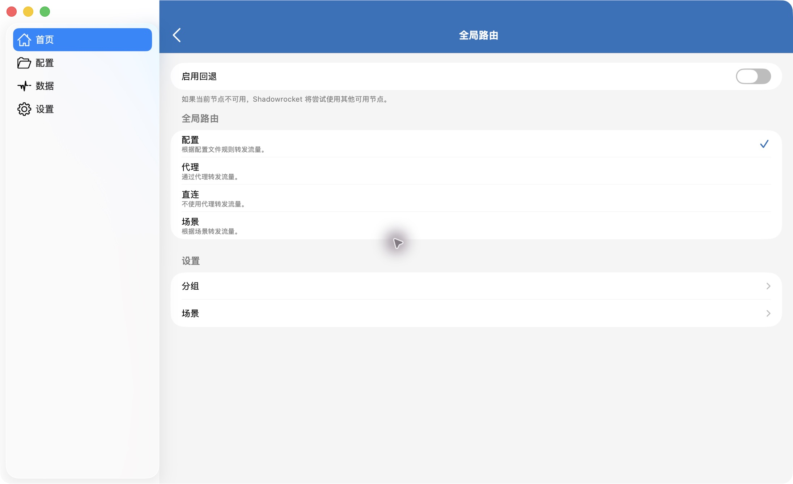

01
下载 .conf 文件
点击上方下载按钮，将配置保存到本地。也可以在项目的 Release 页面下载对应附件。
Shadowrocket-CN-Smart-v1.0.2.conf
文件约 1.2 MB，规则已内置。无需下载 Source code 压缩包；保存后确认扩展名是 .conf，而不是 .txt 或 .html。
以 macOS 界面为例 · 配置版本 v1.0.2
点击上方下载按钮，将配置保存到本地。也可以在项目的 Release 页面下载对应附件。
Shadowrocket-CN-Smart-v1.0.2.conf
文件约 1.2 MB，规则已内置。无需下载 Source code 压缩包；保存后确认扩展名是 .conf，而不是 .txt 或 .html。
在 Shadowrocket 左侧进入「配置」，点击「导入…」，选择刚下载的文件。导入后，将它设为当前使用的配置。
在「本地文件」中核对版本。界面说明中，复选标记代表正在使用的配置；仅出现在列表里并不等于已经启用。
关键区别：「配置」按文件规则分流；「代理」不是本教程使用的分流模式。
本文件的 PROXY 使用首页节点，不附带自动选节点的策略组。若应用另有回退设置，节点故障时的切换行为还受该设置影响。

确认配置、模式和节点，即可开始使用
使用中遇到问题或发现域名遗漏？欢迎 提交 Issue，附上配置与客户端版本、目标域名、实际表现和期望策略。
也欢迎 Fork 项目并 提交 PR，补充规则或改进教程。
| 流量类型 | 本版本的预期策略 |
|---|---|
| 本地网络、已收录国内域名、未被更早规则命中的 .cn | DIRECT 使用本地直连网络 |
| 已收录境外 AI、Google 与开发平台 | PROXY 使用首页节点 |
| Apple、Microsoft 的全球服务 | PROXY 使用首页节点 |
| Apple 推送、校时、证书检查；中国区 iCloud、App Store、世纪互联与 Azure 中国 | DIRECT 直连 |
| 未命中前置规则的流量 | 已有 CN 目标 IP 按 GeoIP 直连，其余代理兜底 |
用固定地址 Shadowrocket-CN-Smart.conf 导入的，在 App 的配置页更新即可。带版本号的文件要换版时，下载后重新导入并确认启用。建议先保留上一版本，方便需要时切回。离线规则不会自动获取上游更新；规则更新随项目版本发布。
v1.0.2 适用于具备 IPv4 连接的网络，在 Shadowrocket 的「配置」模式下生效。境外流量使用首页节点；代理流量的 QUIC 会关闭并改走 TCP。请自行准备可用节点；目标服务的地区及账号要求由对应服务商决定。
反馈和贡献时，请勿公开节点密码、订阅链接或完整访问日志。